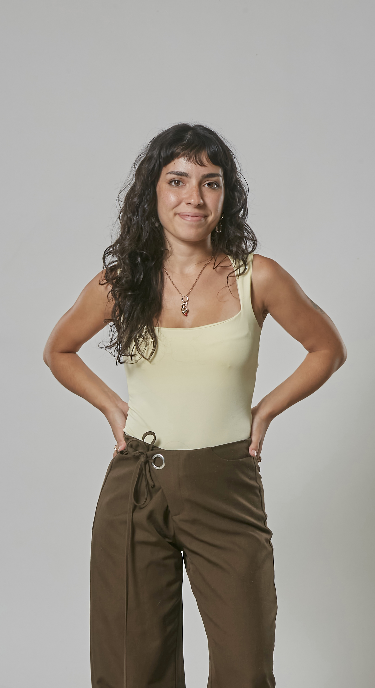

Edición de video
Montaje ágil, ritmo, color, diseño sonoro y subtitulado para Reels, TikTok, YouTube y piezas institucionales. Formato vertical u horizontal, listo para publicar.
Mendoza, Argentina · Disponible para proyectos
Soy editora de video
Transformo ideas en videos que se miran hasta el final: guion, rodaje y edición para medios, marcas y campañas.

01 — Sobre mí
Soy estudiante avanzada de la Licenciatura en Comunicación Social en la Universidad Nacional de Cuyo y trabajé en medios digitales desde 2024. Hoy produzco, filmo y edito videos originales todos los días para JH Broker.
Mi fuerte es transformar ideas en contenido: pensar conceptos creativos, desarrollar guiones y diseñar estrategias de comunicación adaptadas a cada plataforma. Busco que cada pieza tenga un propósito, conecte con su audiencia y transmita un mensaje claro, ya sea para una marca, una campaña o un proyecto periodístico.
02 — Servicios
Montaje ágil, ritmo, color, diseño sonoro y subtitulado para Reels, TikTok, YouTube y piezas institucionales. Formato vertical u horizontal, listo para publicar.
Rodaje en set y exteriores, optimizando recursos y tiempos de captura.
Scripts dinámicos pensados para el impacto visual y la retención de audiencia.
Piezas adaptadas a cada plataforma según tendencias y públicos.
Contenidos periodísticos y corporativos optimizados para buscadores.
Mensajes claros para campañas políticas, instituciones y marcas.
03 — Trabajos destacados
Content creator y editora audiovisual de la campaña electoral. Desarrollé piezas estratégicas para redes con foco en la claridad del mensaje, adaptando cada contenido a su plataforma y traduciendo temas complejos en relatos simples.
Filmmaker y creadora de contenido en Grupo América: idea, guion, rodaje y edición de 8 videos originales por día, con montaje ágil, diseño sonoro y subtitulado para el consumo rápido.
Creación, filmación y edición de videos para Instagram, TikTok y otras plataformas digitales, orientados a comunicar servicios del sector asegurador, fortalecer la identidad de marca, generar interacción con la audiencia y difundir eventos corporativos.
Una mirada a los tres proyectos: comunicación política, medios digitales y marca.
Reel de campaña
Reel de campaña
Reel de campaña
Video para El Siete
Video para Diario UNO
Video para El Siete
Video para JH Broker
Video para JH Broker
Video para JH Broker
Pasá el mouse para previsualizar · Tocá para ver con sonido
04 — Experiencia
Bajá despacio: el cabezal recorre mi trayectoria. Tocá un clip para ver el detalle.
JH Broker de Seguros
Grupo América
Campaña política electoral · Emir Félix
Diario UNO · Grupo América
Buda Casa Productora
05 — Contacto
Contame tu idea y armamos juntos el video, la campaña o el contenido que necesitás.